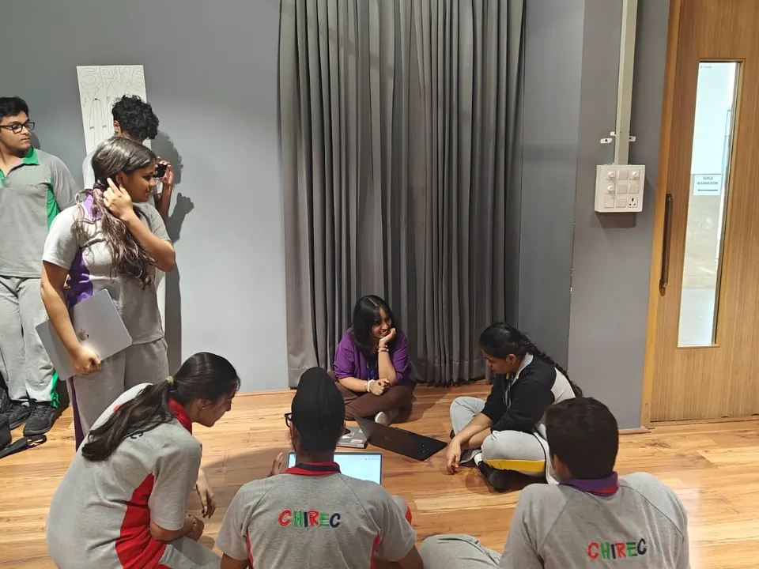
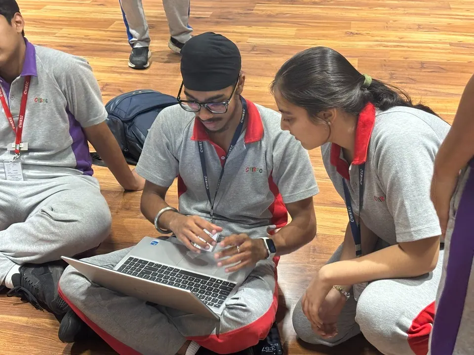
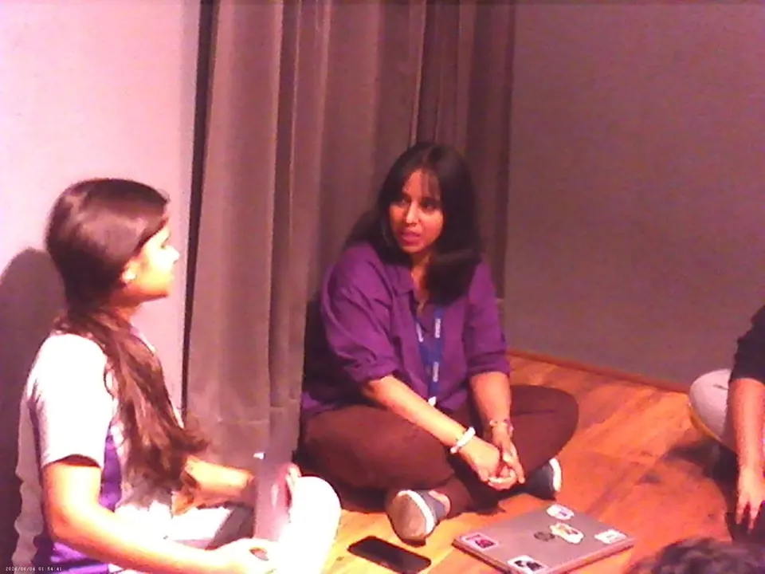
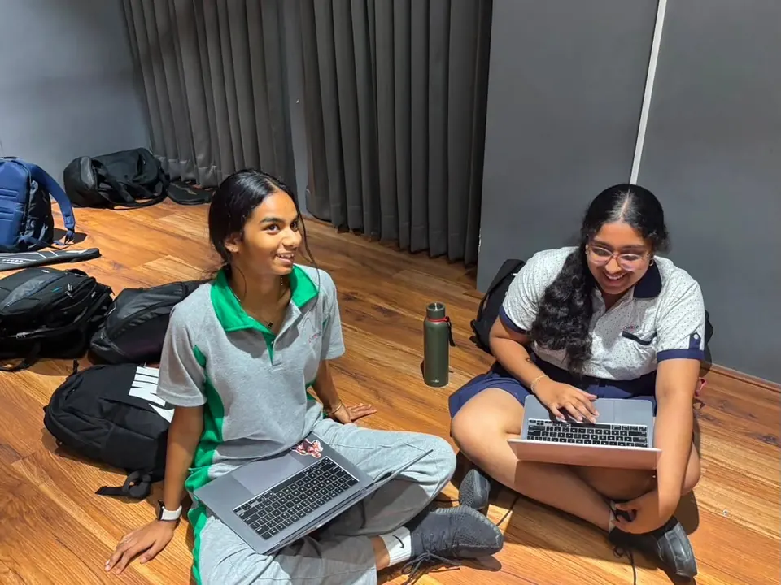
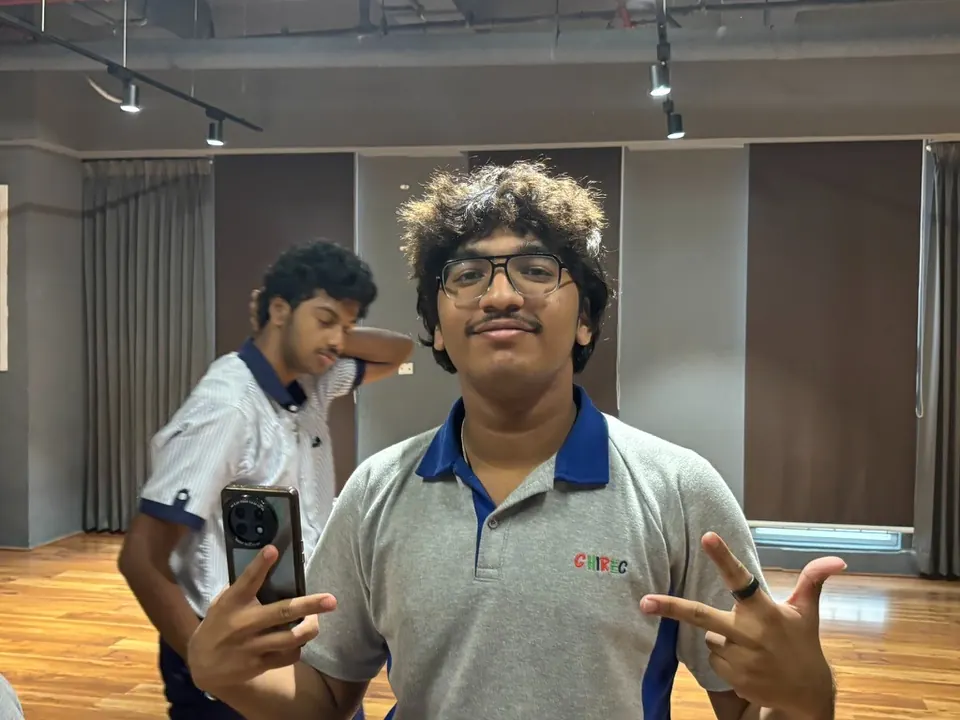
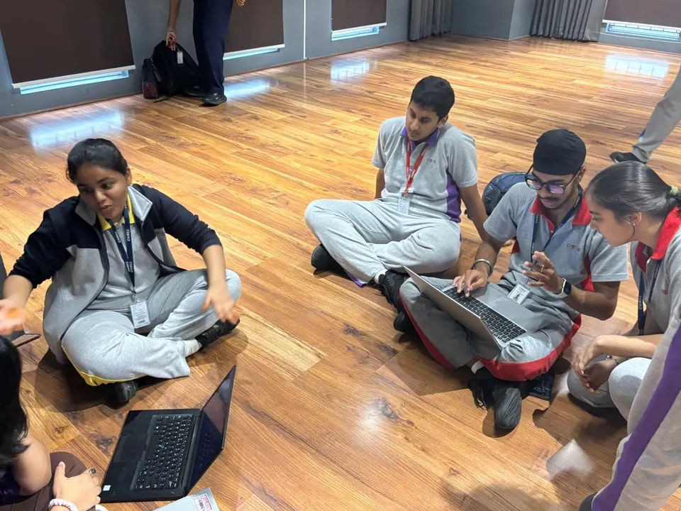
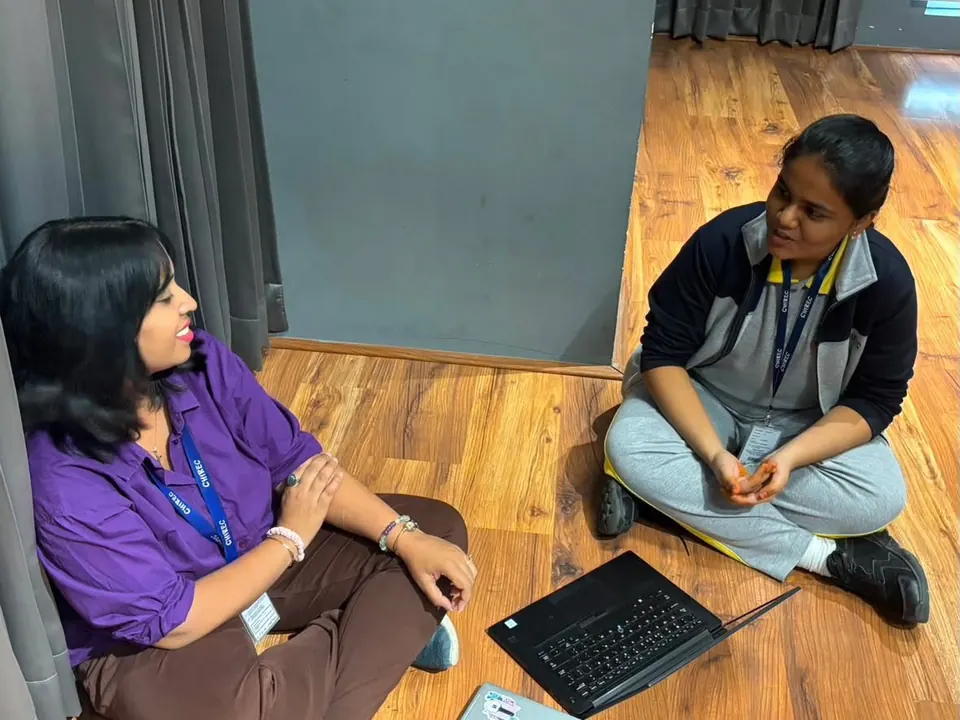
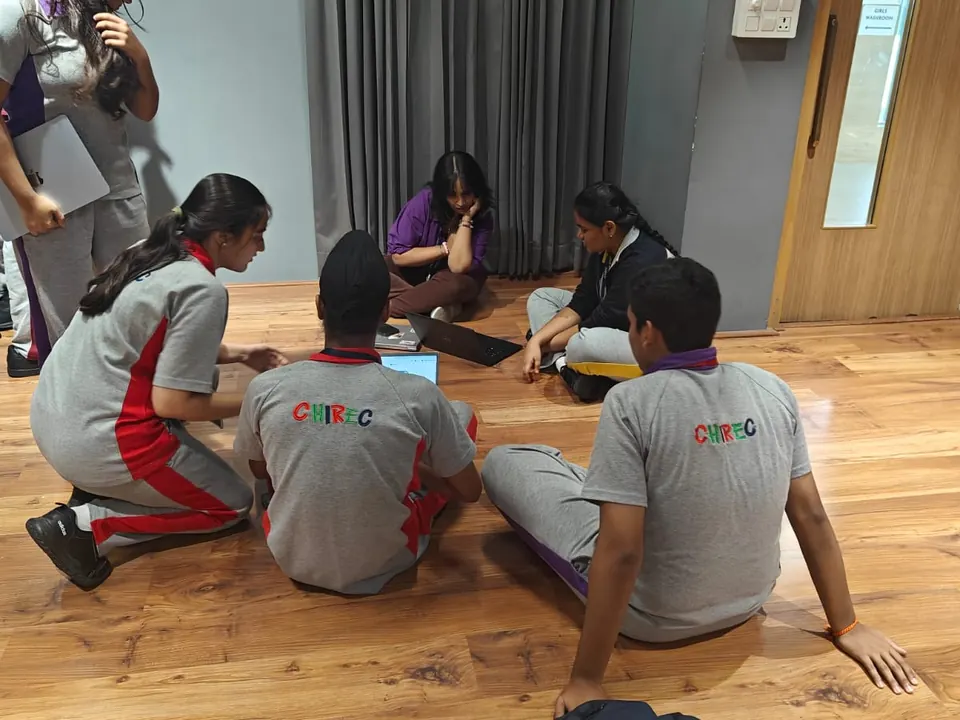

Core team
The students who run the Collective
Choose anyone to read their introduction, in their own words.
-
Hi, I’m Aadi and I’ve been training in theatre since kindergarten, beginning with Helen O’Grady International, the world’s largest developmental drama programme, and later continuing my training with the International Drama Academy.
Theatre has been a huge part of my life, partly because it lets me explore different versions of my own self, those that I never would have dared touch in reality, and I want to use what I’ve learned to help make drama more accessible, collaborative, and exciting for the entirety of the student body at CHIREC, not solely the performers.
Through the Drama Collective, I hope to create more spaces for students to perform, experiment, collaborate, and discover what they’re capable of, whether they’ve been performing for years or are stepping onto a stage for the first time, while creating opportunities for students to experience theatre from the other side of the stage; to encounter stories, performances, and ideas that they might not otherwise have the chance to see, and to make theatre something the wider community can engage with.
-
whirlwind (n): a rush of chaos and momentum
Take your pick on whether that's my connotation of the word or a personal biography. Hi! I'm Aripra:) Apart from being an avid monologuer and a novel addict, I'm also the Executive President of the Drama Collective and an IBDP1 student at Chirec. If I had to sum myself up, I'd say I'm a mix of B99 reruns, blasts of Green Day and Drake and the desire to live by the words “I go to seek a great perhaps.” On a very serious note, I joined this collective not purely because of my love for theatre, but because I wanted to take all that chaos and actually put it towards something meaningful.
-
Meet Hasini Rao Kasuganti, a DP1 student interested in writing, design, economics, entrepreneurship, and, most importantly, bringing ideas to life. With experience in MUN, student publications, and various creative and student-led initiatives, she enjoys working across different roles and turning concepts into engaging projects. She applied for the role because she wanted to be involved in the process of creating a production from the very first idea to the final performance, while bringing together the creative and organisational sides of theatre. She hopes to create productions that are exciting, memorable, and leave audiences looking forward to what comes next. Outside of school, you’ll probably find her listening to Sade on repeat or working on her next project.
-
Hey! I’m Pritika :)
I’m currently an IBDP1 student at CHIREC interested in economics and politics, and outside of theatre, I’m usually somewhere between writing, overthinking storylines, or getting way too invested in how something could be done better. I didn’t join this collective just because I like theatre (though I do). I joined because I like the process of it: the brainstorming, the problem-solving, the “this might actually work” moments. Flash plays especially feel like that space where ideas don’t have to be perfect, just bold enough to exist, and that is something I'm extremely excited to pursue throughout the year.
-
I'm Karthikeya, and I'm the Head of Finance for the collective.
My finance experience comes from the business side of things. I wrote a full business plan for a public space, mapping out how it could fund itself through multiple revenue streams. I've done research into finance and how businesses stay sustainable, and I've helped with sponsorships, which taught me how to pitch value and make the numbers work for both sides. I also run Spark Tank, where we teach people how businesses actually make money.
As for drama, I've always been into storytelling. I love cinema and spend a lot of time thinking about why certain scenes hit the way they do. I'm also a pianist, so I care about how music and mood shape what an audience feels. I'm not the one who'll be center stage, but I care about what makes a production happen.
My goal is simple: keep our money organized, bring in sponsors, and let the creative people do their thing without worrying about costs.
-
Heyy, I’m Nivaan! I spend a good amount of my time at the gym or playing badminton, and I love films that feel like art rather than just entertainment. I’m especially drawn to the way directors build entire worlds and tell stories through visuals, music and the smallest details. I’m also someone who gets curious about how things work, whether it’s understanding something completely new or figuring out how all the different pieces of a system fit together. I like challenging myself, learning new things and getting a little too invested in whatever catches my interest. Excited to see what’s in store with Drama Collective!
-
Hey, I’m Jasshan, a DP1 student with a strong interest in acting, marketing, networking, and the performing arts. Having acted in productions and worked on creative promotions, I enjoy connecting with people and bringing ideas to life. As Sponsorship Head of my school’s Drama Collective, I focus on building partnerships and supporting our productions.
-
Hey!!! I’m Hemanth, I’m someone who loves meeting new people, communicating, and taking responsibility, so I felt Head of Sponsorship was a role that suited me. Among all chaos that comes with me I always find time to do the one thing I love the most… play basketball. I really enjoy spending time with my loved ones, listening to music and exploring new things. I really hope with my experience and knowledge I would allow the event to go smoothly.
-
Hello! I'm Snikitha. I am a DP1 student. I’m currently one of the three heads of Designs in the drama collective. I chose design because I've always been more interested in the visual side of theatre and figuring out how all the little details come together. I've always been super into theatre - keeping up with every musical and plays; and design. And I would love to bring my two top interests together! In addition, I've done many stage plays and musical theatre, worked on set design, and I also love character, environment and prop design!
-
Hi, I’m Ayushi Shah from IB12 and I’m one of the heads of design. I’ve been into art and design almost my entire life and wish to pursue a career in animation. I have considerable experience in editorial, graphic, character and set design. I was first properly introduced to theatre in middle school and some of my favourite productions include Hamilton, Hadestown, Dear Evan Hansen, and Macbeth. My hobbies include reading, watching k-dramas, and scrolling pinterest. During my time in the drama collective, I hope to combine my knowledge of theatre and my design skills to create work that leaves a lasting impact.
-
As one of the Heads of Design for the Drama Collective, my role is to shape the visual identity of the collective and bring creativity into everything we present. I focus on creating a distinctive style through posters, visuals, social media, set elements and other creative details. I want the Drama Collective to have an identity that feels modern, expressive and memorable, while allowing us to experiment with different styles and ideas. My goal is to make the visual side of the collective just as engaging and impactful as the performances themselves.
-
Hey there! I'm Ikshan Kodimyala. I'm currently an IBDP Year 1 student and so far I kind of hate it. Other than that, I’m one of the Heads of Logistics for this year's CHIREC Drama Collective. I joined this collective with little to no knowledge on how drama works whatsoever. Thankfully, I’m a part of the logistics team! I chose this department mainly because I enjoy putting together plans and fixing them when moments get tight. I also love clearing things up and organizing stuff because it makes me happy afterwards. However, outside the collective, I’ve done taekwondo for 8 years, and now I’m playing tennis competitively. Sadly, this does mean that I have to put a ton of hours into practice but I'm still able to balance my love with video games as well. My favorite game is Assassin's Creed Odyssey right now. I also love cars, I love how they work and I love watching restoration videos. I really hope I get to go hands on soon. However, I'm an absolute sucker for Bad Bunny. I've loved him since 2023 and I’m pretty sure I’m never going to let go of him either.
-
Hey! I’m Avyukth, a DP2 student interested in mechanical engineering. When I’m free you can probably find me at CragStudio. I'm also the head of logistics for the school band, what I’ve done with them so far: lead logistics for a performance at the second biggest marathon in the nation (35,000+ Participants), lead logistics for performance at Merutsav 2026 (Largest Inter-School student festival), and other school events. My love for theatre comes from watching old movies with my dad and as of late the discussions in Rosalind Ma'am's literature classes.
-
I’ve always been someone who likes having a lot going on. Whether it’s photography, basketball, fitness, or working on some random creative idea, I enjoy things that keep me moving, thinking, and trying something new. Photography, in particular, has become one of the ways I notice and remember things. I like catching moments that might otherwise go unnoticed, whether it’s an expression, a reaction, or just something that looks interesting for reasons I probably can’t explain properly. Hi, I’m Karanjot, a CP Year 2 student at CHIREC and the Head of Marketing and Outreach for the Drama Collective.
I think a lot of what I enjoy comes down to the same thing: energy and storytelling. Basketball has taught me to think quickly and work with the people around me, while photography and content creation give me a space to experiment with how something looks, feels, and comes across to someone else. I’m also the kind of person who can get strangely invested in an idea once I think it has potential, which is probably both useful and mildly concerning for everyone who ends up working on it with me.
That’s also what drew me to marketing and outreach for the Drama Collective. Through marketing, I want to take everything happening around the Collective, from rehearsals and performances to the people and moments behind them, and find ways to make others care about them too. Through outreach, I want to take that same energy beyond our own stage by building collaborations and finding ways for theatre to connect with different people and communities. More than anything, I want the work we do to feel like us: creative, energetic, slightly unpredictable, and capable of reaching people both within and beyond the Collective.
-
Prisha (n): a walking plot twist with absolutely no intention of being predictable.
Hi, I’m Prisha! Marketing Head, professional yapper, and firm believer that life is far too short to be boring. Between my love for creative ideas, turning random thoughts into actual projects, and somehow always finding myself doing something new, I’d say boredom and I aren’t exactly on speaking terms. I’m here for the people, the creativity, the madness, and everything that happens when a bunch of passionate people get together and make something happen. Do I always know what I’m doing? Not necessarily. Am I going to do it anyway? Absolutely. After all, what’s life without a little chaos and a good story to tell afterwards?
-
I’m Samaara Rao, a DP1 student and this year’s Head of Marketing for the CHIREC Drama Collective. I’ve been involved in theatre before, both as a performer and behind the scenes, and it’s something I’ve always enjoyed being a part of.
Outside of theatre, I’m a Psychology student and have always been interested in art and creativity in general. I love travelling, listening to music and spending time with my friends.
-
I'm Darsh, a DP1 student and this year's Head of Outreach for the CHIREC Drama Collective! I joined because I've always been amazed by how much goes into putting on a show. Behind every great performance is a whole crew making the magic happen, and I knew I wanted to be part of it. Outreach felt like the perfect spot for me since I love meeting new people, building connections, and being the link between the collective and everyone outside it. Away from the collective, I play football and tennis, spend a lot of my free time gaming, and have a serious soft spot for cars.
-
“I am nothing in my soul if not obsessive.”
Richard Papen, from The Secret History, was drawn into the world of Classics, Greek, and the people around him. Well, my obsessions tend to be a little less dramatic: books, films, photography, and classic literature. Hi, I’m Rimsha Dawood, a DP 2 student at CHIREC, and one of the Heads of Photography of the Drama Collective. My love for photography has eventually led me to co-found the Film & Photography Club at CHIREC, where I’ve been able to share my passion for framing a moment and keeping it forever. Joining the Drama Collective means the line between photography and storytelling tends to blur, and being a part of that means getting to capture not just what unfolds on the stage, but every little thing – the expressions, the emotions, and the atmosphere – that leads up to the moment we get to share with an audience.
-
Hi! I’m Bhavneesh M, an IBDP Year 1 student and one of the Heads of Photography of the Drama Collective. I joined because I’ve always wanted to explore theatre, meet creative people, and be part of something where we can actually bring ideas to life.
Outside of drama, I’m really into photography, videography, music, gaming, and writing. I love experimenting with visuals and storytelling, I’ve probably spent an unhealthy amount of time overthinking something absolutely useless and I’m especially interested in anything cinematic. I’m additionally into sports, especially cricket and pickleball, and I’m also a certified Weeknd addict and, unfortunately, a White Monster addict. If I’m not listening to The Weeknd, there’s a decent chance im dead :)).
-
Hi! I’m Randheer Chowdary Kankanala. I'm a DP year 1 student and I am also a head of photography at the drama collective. I went up for photography because I’d say I’m not bad at taking pictures or finding the right frame. This comes from my passion for cinematography and filmmaking. I’ve been making short films and writing scripts for as long as I can remember, so taking photos and editing is no new thing to me. Other than filmmaking, I am really passionate about music. I love making music and experimenting with different genres to hopefully one day find my own sound.
-
Heyyyyyyy! This is Deeksha, a DP1 student, and also the Head of Workshops. My passion for the collective was fueled by the opportunity it offered for combining creativity with teamwork to produce a wonderful community of artists including those who write, those who act, those who direct, those who make and many more. Despite not being a previous theatre enthusiast and knowing almost nothing about it, I've loved writing stories right from middle school. Hence, I applied to see how these tales on paper turn into scenes on stage. I like my role because it combines 2 things I love: exploring something new and teaching something. Being the Head of Workshops, I intend to bring forth the world of theatre not through monotone lectures but fun programs combining theory with practicality, right as I learn alongside you.
P.S.: I'm a big mystery and fantasy addict (no discrimination upon whether a series or a good read), so feel free to recommend something during the sessions ;)
-
“To be or not to be, that is the question”
Hey there! I’m Gautam, a DP 1 student and this year’s Head of Publication for the Drama Collective. As a student, I am a person who enjoys putting thoughts into words that can be remembered for a lifetime. I’ve always wanted to capture an unseen lens of theatre apart from its production, sharpen my creativity through a new form of expression: Drama, and meet new people who strengthen my creative persona. Hence, here I am!
Outside the stage, I am a Mathematics and Economics enthusiast making me to also view real-life problems with a practical approach.
My hobbies? Well, I am an obsessive cinephile and an imaginative storywriter who loves to explore a myriad of genres.
That is it. I am ready to give you a whole ton of issues to be read without you getting bored at all! I am ready, so are you?
Let’s talk about some Drama this year!
Behind the curtain
The Collective at work
Planning sessions on the studio floor, long before anything reaches the stage.







